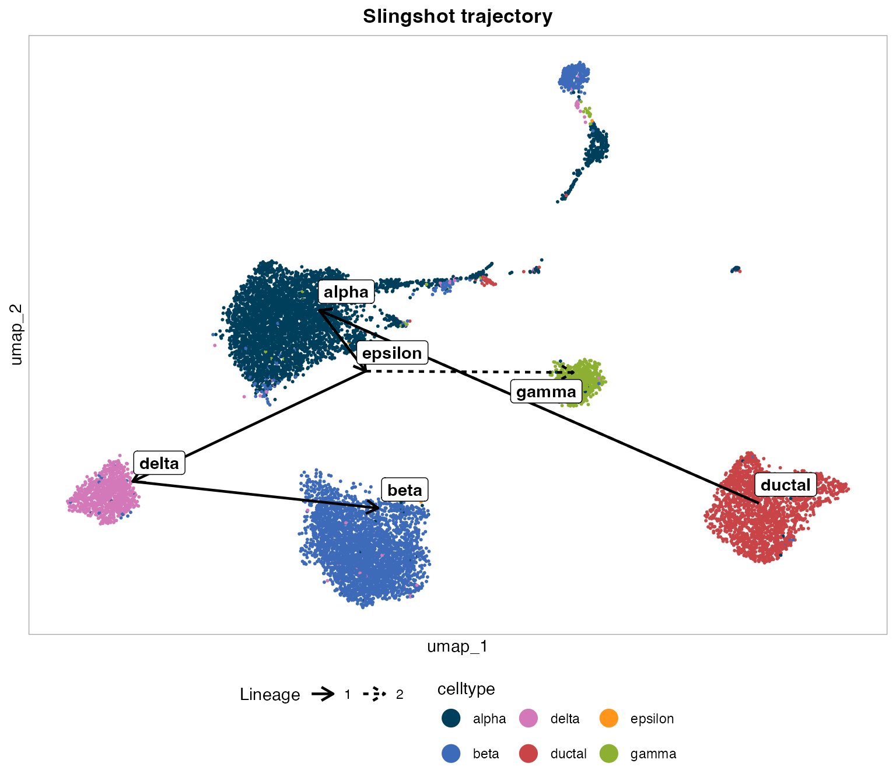
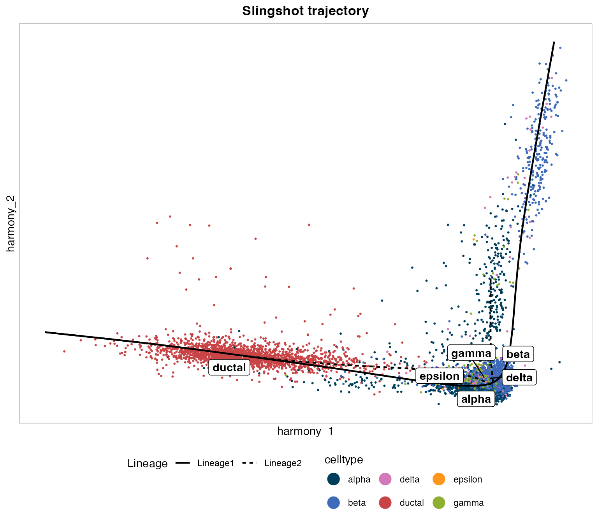
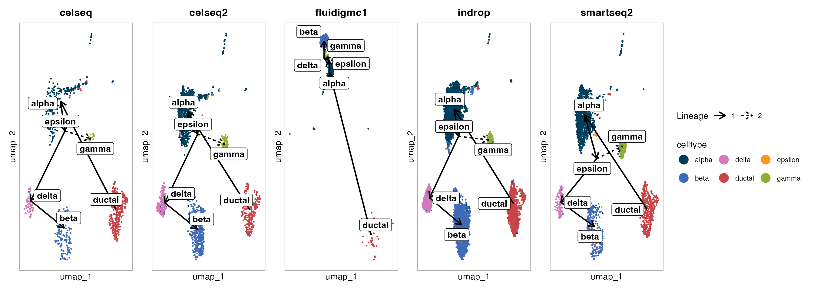
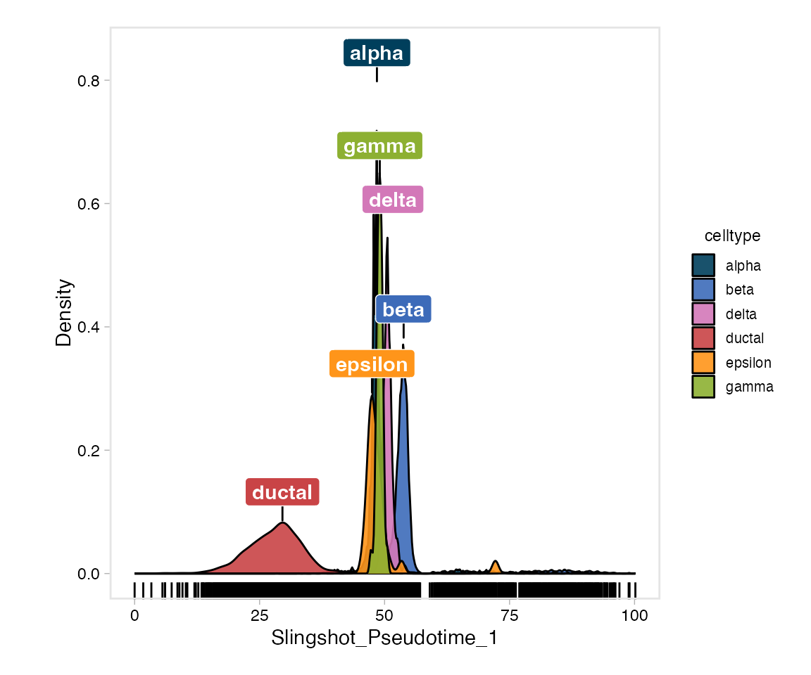
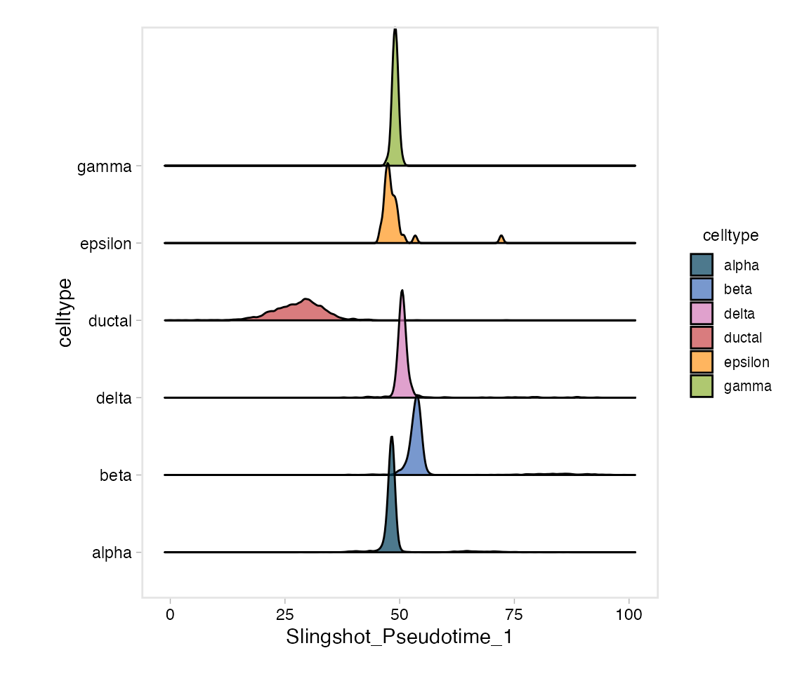
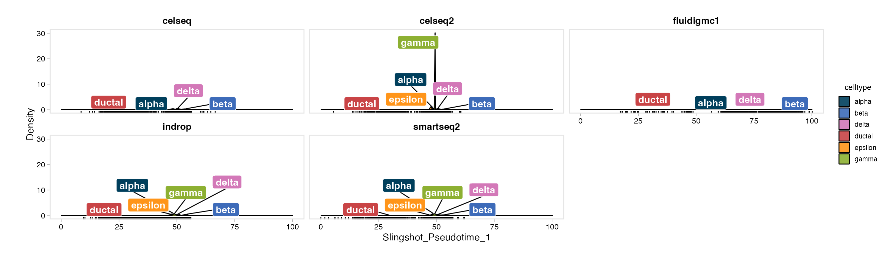
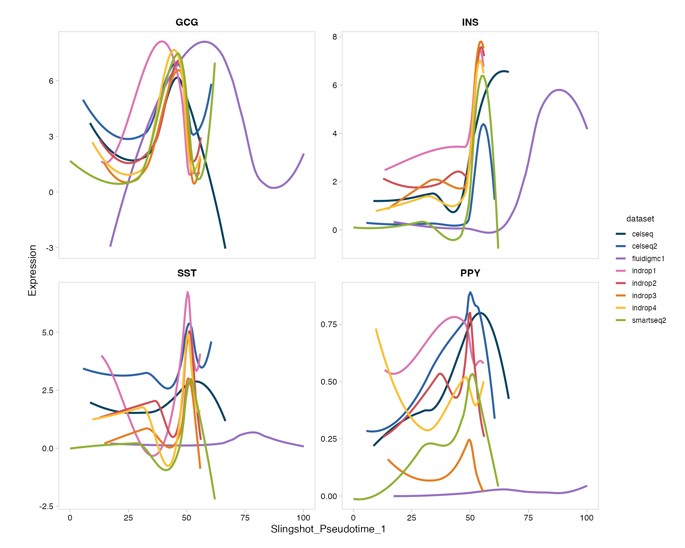
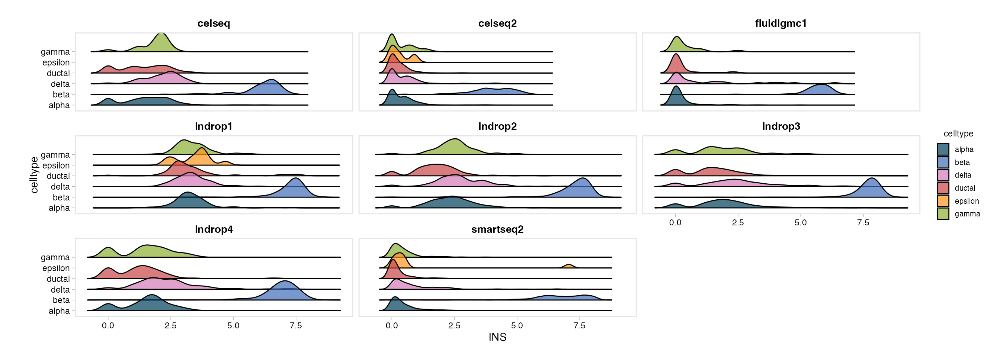

scSidekick - Pseudotime & Trajectory Analysis
20_pseudotime.RmdOverview
Six functions cover the pseudotime workflow end-to-end, built
directly on Seurat objects with no SingleCellExperiment
conversion in sight:
-
RunSlingshot()- fits Slingshot directly on any Seurat reduction (PCA, Harmony, or another integrated embedding) plus a cluster metadata column. Only the reduction matrix and a metadata column are read, so it doesn’t matter whether the object has BPCells, sketch, or multiple v5 assays, and the expression matrix is never touched or re-normalized. Results are written back onto the object so they can be reused without recomputation. -
SlingshotLineages()- a readable summary of what was found: one row per lineage, with its cluster path and cell count. -
PlotTrajectory()- overlays the trajectory on a DimPlot, either as straight cluster-to-cluster segments (the clean, DDRTree-like look) or as Slingshot’s own smoothed principal curves. -
PlotPseudotime()- density/ridge distribution of pseudotime across clusters; works with any numeric pseudotime column, not just Slingshot’s. -
PlotFeatureTrend()- smoothed gene expression (or any numeric feature) vs. pseudotime, one facet per feature. -
PlotFeatureDistribution()- a more general density/ridge plot for any single gene or metadata feature, withgroup.by/split.by/facet.by- useful well beyond pseudotime (e.g. checking whether replicate samples agree).
We’ll walk through all six on panc8, the classic
multi-technology pancreas dataset, tracing the ductal-to-endocrine
differentiation trajectory.
library(scSidekick)
library(Seurat)
library(SeuratData)
library(harmony)Preparing the data
panc8 combines pancreatic islet cells profiled across
eight different technologies (dataset) - exactly the kind
of batch structure Harmony integration is for, and a good stress test
for whether a trajectory holds up across technologies rather than being
an artifact of one.
We restrict to the ductal and endocrine cell types
(ductal, alpha, beta,
gamma, delta, epsilon) so the
trajectory reflects the known endocrine differentiation biology, rather
than an uninterpretable path through unrelated immune/stromal/vascular
populations that also happen to be in this dataset
(activated_stellate, endothelial,
macrophage, mast,
quiescent_stellate, schwann).
#InstallData("panc8")
data("panc8")
panc8 <- UpdateSeuratObject(panc8)
panc8$donor <- panc8$orig.ident
endocrine_types <- c("ductal", "alpha", "beta", "gamma", "delta", "epsilon")
panc8 <- subset(panc8, subset = celltype %in% endocrine_types)
panc8 <- NormalizeData(panc8, verbose = FALSE)
panc8 <- FindVariableFeatures(panc8, nfeatures = 2000, verbose = FALSE)
panc8 <- ScaleData(panc8, verbose = FALSE)
panc8 <- RunPCA(panc8, npcs = 30, verbose = FALSE)
panc8 <- RunHarmony(panc8, group.by.vars = "dataset", verbose = FALSE)
panc8 <- RunUMAP(panc8, reduction = "harmony", dims = 1:30, verbose = FALSE)
panc8 <- PrepObject(panc8,
variables = c("celltype", "dataset", "tech"),
group.by = "celltype",
object_name = "panc8")1. RunSlingshot() - fit the trajectory
We fit on the Harmony embedding (not PCA or UMAP) so
the trajectory reflects batch-corrected biology rather than
technology-driven structure, and root it at "ductal" - the
progenitor-like population endocrine cells differentiate from.
panc8 <- RunSlingshot(panc8,
cluster.by = "celltype",
reduction = "harmony",
start.clus = "ductal",
progress = FALSE)A few things worth noting from the message output:
- Harmony here has 30 components;
RunSlingshot()automatically capped fitting to the first 20 (max_dims, default20L) because principal-curve fitting cost scales with dimensionality far more than with cell count - passdims = 1:30to use them all, or tunemax_dims. -
Slingshot_Pseudotime_1,Slingshot_Pseudotime_2, … are now columns inmeta.data; the fitted model, cluster MST, and lineage paths live inpanc8@misc$slingshotfor the plotting functions below to reuse without recomputation. - For a real (much larger) object, set
progress = TRUE(the default) to get live “still fitting” heartbeat messages from a background process instead of a silent wait, andcaffeinate = TRUEto keep the machine awake for a long run.
2. SlingshotLineages() - which lineage is which
SlingshotLineages(panc8)## Lineage Path n_cells
## 1 Lineage1 ductal -> alpha -> epsilon -> delta -> beta 11331
## 2 Lineage2 ductal -> alpha -> epsilon -> gamma 7288Two lineages were found, both rooted at ductal and both
routing through alpha and the very rare
epsilon population (30 cells in the whole dataset) before
diverging to delta -> beta or to
gamma. Take the epsilon branch point as an MST
artifact of how few cells that population has, not a strong biological
claim - always sanity-check a lineage’s path against what you know of
the biology, not just the algorithm’s output.
3. PlotTrajectory() - overlay the trajectory
Straight segments (default)
The default style = "straight" draws the cluster-level
minimum spanning tree as straight, arrowed segments between cluster
centroids - legible even with many clusters, and reusable on
any plot reduction since only the MST’s cluster connectivity is
reused (node positions come from whichever reduction you plot on).
PlotTrajectory(panc8, reduction = "umap", style = "straight")
Line type (not color) distinguishes the two lineages, so it doesn’t collide with the cluster color legend - see “Lineage” in the legend below the plot.
Smoothed curves
style = "curves" draws Slingshot’s own principal curves
instead. These live in whichever reduction Slingshot was fit on
(Harmony here), so reduction must match
panc8@misc$slingshot$reduction -
PlotTrajectory() stops with an actionable message rather
than silently drawing a curve in the wrong coordinate space if it
doesn’t.
PlotTrajectory(panc8, reduction = "harmony", style = "curves")
Splitting and faceting
Like every other scSidekick plotting function,
PlotTrajectory() accepts split.by (and
row.by, for a two-way grid) - each panel is drawn from an
independent subset of the object, so the trajectory overlay and cluster
centroids are recomputed per panel rather than reusing the pooled fit’s
positions. Here, one panel per sequencing technology checks whether the
overlay looks consistent across platforms rather than being driven by
one of them:
PlotTrajectory(panc8, reduction = "umap", style = "straight",
split.by = "tech")
Numbered labels
number_labels = TRUE swaps the legend and centroid
labels for short numeric codes (1, 2, …)
instead of full level names - handy once names get long enough to crowd
a legend, or when you’d rather label panels by number in a figure and
spell out the key separately in a caption:
PlotTrajectory(panc8, reduction = "umap", style = "straight",
number_labels = TRUE)4. PlotPseudotime() - distribution across cell
types
plot.type = "density" (default) draws a density + rug
plot of pseudotime per cell type, with peak labels marking each level’s
modal pseudotime:
PlotPseudotime(panc8, pseudotime.by = "Slingshot_Pseudotime_1")
plot.type = "ridge" shows the same distributions as
ridges instead:
PlotPseudotime(panc8,
pseudotime.by = "Slingshot_Pseudotime_1",
plot.type = "ridge")
split.by (and row.by, for a two-way grid)
facets either style into column/row panels - here, one panel per
sequencing technology, to check whether the pseudotime ordering holds up
across platforms:
PlotPseudotime(panc8,
pseudotime.by = "Slingshot_Pseudotime_1",
split.by = "tech")
5. PlotFeatureTrend() - hormone genes across
pseudotime
Endocrine cell types are defined by the hormone they secrete:
GCG (glucagon, alpha), INS (insulin, beta),
SST (somatostatin, delta), and PPY (pancreatic
polypeptide, gamma). Coloring by dataset shows whether each
technology traces a similar expression trend along pseudotime.
PlotFeatureTrend(panc8,
pseudotime.by = "Slingshot_Pseudotime_1",
features = c("GCG", "INS", "SST", "PPY"),
color.by = "dataset")
All four hormone genes rise together around the same point of
pseudotime (where the endocrine populations sit) for most technologies -
except fluidigmc1, which stays flat. That’s a real, known
property of this dataset: Fluidigm C1 capture has much lower sensitivity
for these transcripts than the other platforms, not a biological
difference. This is exactly the kind of batch artifact
color.by is meant to surface before you draw a biological
conclusion from a pseudotime trend.
features accepts genes and numeric
meta.data columns interchangeably (module scores, cNMF
usages, QC metrics, …), and extraction goes through the same
assay/version-safe path
(.nk_feature_matrix()/.get_layer_data()) as
every other feature-plotting function in the package.
When color.by is left NULL, it falls back
to group.by for coloring - matching the rest of the
package’s default - while group.by still doubles as a
cell-subset filter (paired with groups) regardless of which
variable ends up coloring the plot.
split.by/row.by facet the whole thing into
column/row panels, one independent trend fit per panel:
PlotFeatureTrend(panc8,
pseudotime.by = "Slingshot_Pseudotime_1",
features = "INS",
group.by = "celltype",
split.by = "tech")6. PlotFeatureDistribution() - ridge/density for any
feature
A more general version of Seurat’s RidgePlot() - one
ridge per group.by level, for any single gene or numeric
feature - but with a split.by fill within each
ridge and a facet.by panel split, which
RidgePlot() doesn’t support. Here: one ridge per cell type,
one panel per technology, to see whether INS (insulin)
distinguishes beta cells consistently across all eight
technologies.
PlotFeatureDistribution(panc8,
feature = "INS",
group.by = "celltype",
facet.by = "dataset",
style = "ridge")
beta separates cleanly from the other cell types in
every technology, which is reassuring - the INS signal
isn’t a single-platform artifact. Use style = "density" for
overlaid curves instead of ridges, or swap facet.by for
"donor" to check individual-sample agreement rather than
whole-technology agreement.
Saving figures
Every plotting function above follows the same save convention as the
rest of the package: pass output_dir (or store one with
PrepObject()) and a .legend sidecar is written
automatically alongside the PDF, describing cell counts, the trajectory
rooting, and what’s plotted - so a figure never travels without its own
methods description.
PlotTrajectory(panc8,
reduction = "umap",
style = "straight",
output_dir = "./Figures")file_name, width, and height
override the auto-built name and auto-calculated PDF size when you need
one; timestamp = TRUE appends a
_YYYYMMDD-HHMMSS stamp to the saved file name so repeated
runs are versioned instead of overwriting the previous PDF.
RunSlingshot() additionally writes
analysis_params.json documenting the fit itself (reduction,
dims used, root cluster, lineages found) whenever
output_dir is available - merged into any existing json
rather than overwriting it, so it sits alongside whatever earlier steps
(QC, clustering, GSEA, …) already logged there.
See also
- Vignette 02:
RunHarmony-based integration workflow this trajectory builds on - Vignette 03:
PlotDimPlots()- the UMAP gridPlotTrajectory()matches visual style with - Vignette 16:
CorrelateGene()- co-expression analysis, a complementary way to explore gene relationships within a cell type
Session info
## R version 4.3.1 (2023-06-16)
## Platform: aarch64-apple-darwin20 (64-bit)
## Running under: macOS 15.6
##
## Matrix products: default
## BLAS: /Library/Frameworks/R.framework/Versions/4.3-arm64/Resources/lib/libRblas.0.dylib
## LAPACK: /Library/Frameworks/R.framework/Versions/4.3-arm64/Resources/lib/libRlapack.dylib; LAPACK version 3.11.0
##
## locale:
## [1] en_US.UTF-8/en_US.UTF-8/en_US.UTF-8/C/en_US.UTF-8/en_US.UTF-8
##
## time zone: America/Chicago
## tzcode source: internal
##
## attached base packages:
## [1] stats graphics grDevices utils datasets methods base
##
## other attached packages:
## [1] harmony_1.2.0 Rcpp_1.1.0
## [3] stxBrain.SeuratData_0.1.2 pbmc3k.SeuratData_3.1.4
## [5] panc8.SeuratData_3.0.2 ifnb.SeuratData_3.1.0
## [7] bmcite.SeuratData_0.3.0 SeuratData_0.2.2
## [9] Seurat_5.2.1 SeuratObject_5.1.0
## [11] sp_2.1-3 scSidekick_1.2.0
##
## loaded via a namespace (and not attached):
## [1] RColorBrewer_1.1-3 rstudioapi_0.16.0
## [3] jsonlite_2.0.0 magrittr_2.0.3
## [5] spatstat.utils_3.1-0 farver_2.1.2
## [7] rmarkdown_2.29 zlibbioc_1.48.2
## [9] fs_1.6.6 ragg_1.4.0
## [11] vctrs_0.6.5 ROCR_1.0-11
## [13] DelayedMatrixStats_1.24.0 spatstat.explore_3.2-7
## [15] RCurl_1.98-1.14 S4Arrays_1.2.1
## [17] htmltools_0.5.8.1 SparseArray_1.2.4
## [19] sass_0.4.10 sctransform_0.4.1
## [21] parallelly_1.37.1 KernSmooth_2.23-22
## [23] bslib_0.9.0 princurve_2.1.6
## [25] htmlwidgets_1.6.4 desc_1.4.3
## [27] ica_1.0-3 plyr_1.8.9
## [29] plotly_4.10.4 zoo_1.8-14
## [31] cachem_1.1.0 igraph_2.0.3
## [33] mime_0.13 lifecycle_1.0.4
## [35] pkgconfig_2.0.3 Matrix_1.6-5
## [37] R6_2.6.1 fastmap_1.2.0
## [39] GenomeInfoDbData_1.2.11 MatrixGenerics_1.14.0
## [41] fitdistrplus_1.1-11 future_1.33.2
## [43] shiny_1.11.1 digest_0.6.37
## [45] colorspace_2.1-1 S4Vectors_0.40.2
## [47] patchwork_1.3.1 tensor_1.5
## [49] RSpectra_0.16-1 irlba_2.3.5.1
## [51] GenomicRanges_1.54.1 textshaping_0.3.7
## [53] labeling_0.4.3 progressr_0.14.0
## [55] spatstat.sparse_3.0-3 mgcv_1.9-1
## [57] httr_1.4.7 polyclip_1.10-6
## [59] abind_1.4-8 compiler_4.3.1
## [61] withr_3.0.2 S7_0.2.0
## [63] fastDummies_1.7.3 highr_0.10
## [65] MASS_7.3-60.0.1 DelayedArray_0.28.0
## [67] rappdirs_0.3.3 tools_4.3.1
## [69] lmtest_0.9-40 otel_0.2.0
## [71] httpuv_1.6.16 future.apply_1.11.2
## [73] goftest_1.2-3 glue_1.8.0
## [75] nlme_3.1-164 promises_1.5.0
## [77] grid_4.3.1 TrajectoryUtils_1.10.1
## [79] Rtsne_0.17 cluster_2.1.6
## [81] reshape2_1.4.4 generics_0.1.4
## [83] gtable_0.3.6 spatstat.data_3.0-4
## [85] tidyr_1.3.1 data.table_1.15.4
## [87] XVector_0.42.0 BiocGenerics_0.48.1
## [89] spatstat.geom_3.2-9 RcppAnnoy_0.0.22
## [91] ggrepel_0.9.6 RANN_2.6.1
## [93] pillar_1.11.0 stringr_1.5.1
## [95] spam_2.10-0 RcppHNSW_0.6.0
## [97] later_1.4.2 splines_4.3.1
## [99] dplyr_1.1.4 lattice_0.22-6
## [101] survival_3.5-8 deldir_2.0-4
## [103] tidyselect_1.2.1 SingleCellExperiment_1.24.0
## [105] miniUI_0.1.1.1 pbapply_1.7-2
## [107] knitr_1.45 gridExtra_2.3
## [109] IRanges_2.36.0 SummarizedExperiment_1.32.0
## [111] scattermore_1.2 stats4_4.3.1
## [113] RhpcBLASctl_0.23-42 xfun_0.52
## [115] Biobase_2.62.0 matrixStats_1.2.0
## [117] stringi_1.8.7 lazyeval_0.2.2
## [119] yaml_2.3.10 evaluate_0.23
## [121] codetools_0.2-20 tibble_3.3.0
## [123] cli_3.6.5 uwot_0.1.16
## [125] xtable_1.8-4 reticulate_1.42.0
## [127] systemfonts_1.3.2 jquerylib_0.1.4
## [129] GenomeInfoDb_1.38.8 dichromat_2.0-0.1
## [131] globals_0.16.3 spatstat.random_3.2-3
## [133] png_0.1-8 parallel_4.3.1
## [135] pkgdown_2.1.3 ggplot2_4.0.3
## [137] dotCall64_1.1-1 sparseMatrixStats_1.14.0
## [139] bitops_1.0-7 slingshot_2.10.0
## [141] listenv_0.9.1 viridisLite_0.4.2
## [143] scales_1.4.0 ggridges_0.5.6
## [145] purrr_1.0.4 crayon_1.5.2
## [147] rlang_1.1.6 cowplot_1.2.0.9000